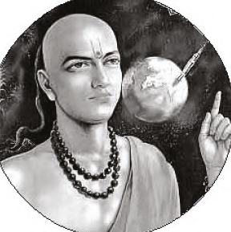
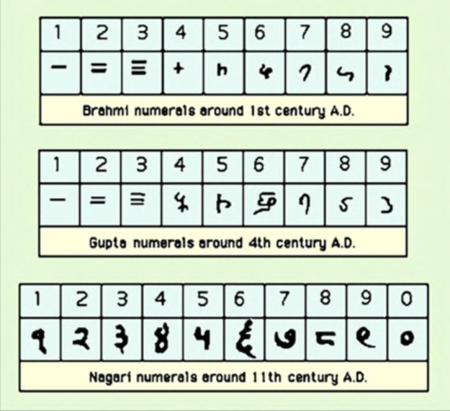
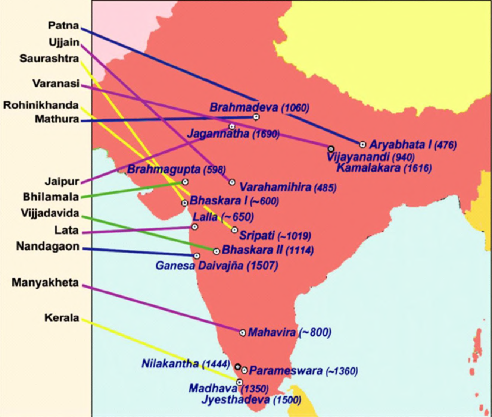
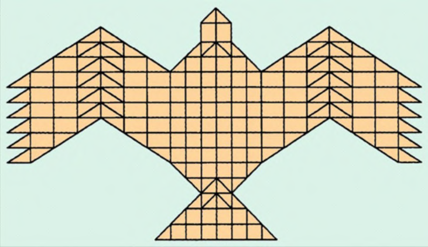
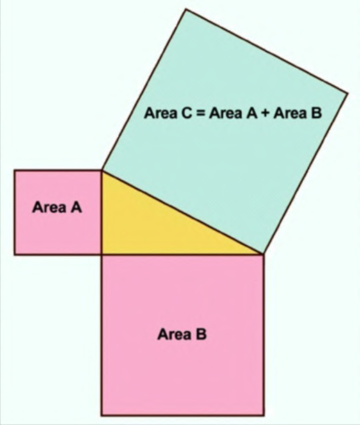
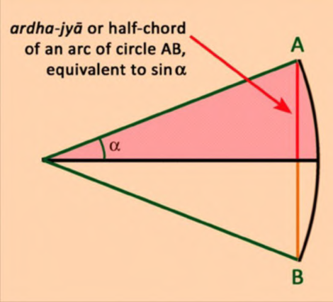
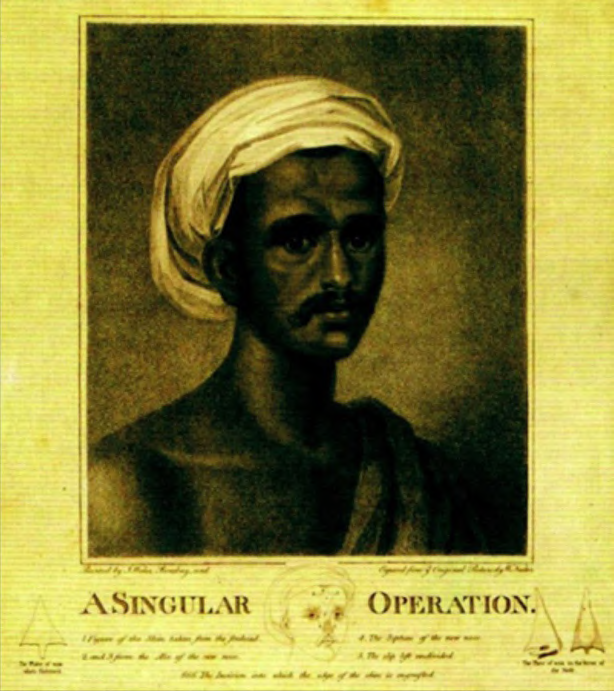
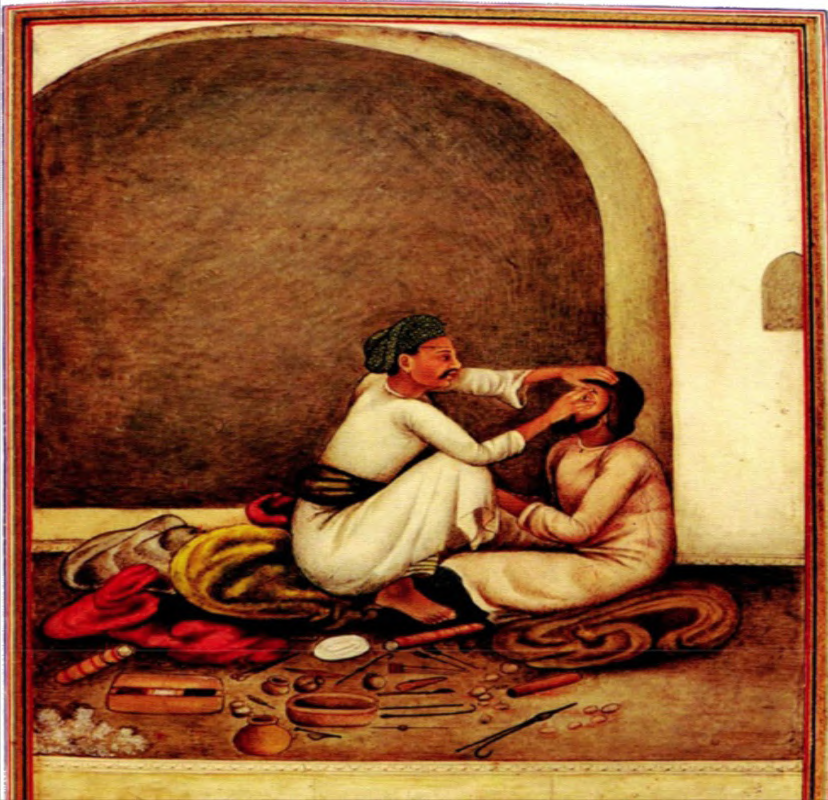
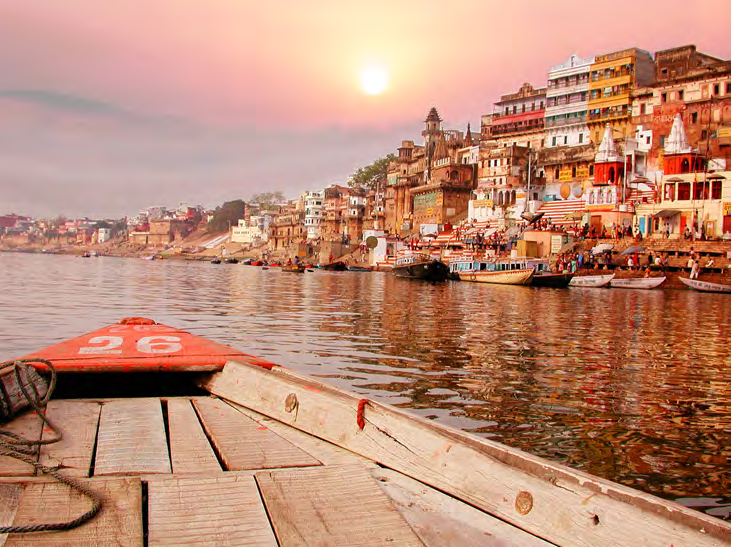
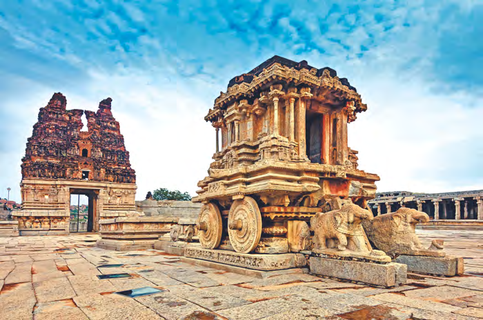

Aryabhata (476 CE) — Described Earth as a rotating sphere, gave π ≈ 3.1416, and authored the Aryabhatiya in just 121 verses.

Birth of "Arabic" Numerals — Indian numerals evolved from Brahmi script (1st c.) through Gupta (4th c.) to Nagari (11th c.), then traveled to Europe via Arab scholars.

Mathematicians Across India — From Aryabhata in Patna to Madhava in Kerala, a continent-spanning tradition of mathematical brilliance across 2,000 years.

Falcon Altar (Sulbasutras) — Fire altars built from 200 precisely calculated bricks — containing the earliest geometric statement of the Pythagorean theorem.

Geometry Before Euclid — The Sulbasutras (8th–6th c. BCE) stated Area C = Area A + Area B — centuries before Euclid formalized it around 300 BCE.

Invention of Sine — Aryabhata replaced Greek full-chord with the ardha-jya (half-chord) = sin α, a key advance that shaped modern trigonometry.

Ancient Rhinoplasty — Indian nose-reconstruction techniques were documented by British surgeons in 1794, introducing plastic surgery to Western medicine.

Ancient Eye Surgery (1825) — An oculist treating a patient with specialized instruments. India's Sushruta tradition described cataract procedures over 2,000 years ago.

Varanasi — One of the world's oldest continuously inhabited cities. Mark Twain called it "older than history, older than tradition, older even than legend."
Golden Temple, Amritsar — The holiest Sikh shrine. Its Guru Ka Langar serves free meals to around 20,000 people daily — up to 100,000 on special occasions.

Hampi, Karnataka — UNESCO World Heritage ruins of the Vijayanagara Empire (1336–1646 CE), with over 1,600 surviving monuments.
Asiatic Lion, Gir National Park — Gujarat's Gir is the last refuge of the Asiatic lion. Their numbers have risen from under 200 in the 1960s to 674 (Census 2020).
Holi — Festival of Colors — Celebrated every spring, millions throw colored powders in a joyful celebration of love, life, and the arrival of spring.
Indian Cuisine — From samosas to biryani, dosa to butter chicken — India's culinary diversity spans thousands of regional dishes, six seasons of flavors, and the world's largest spice tradition.

The Himalayas — Home to the world's highest peaks, still rising as the Indian plate pushes into Eurasia. From skiing in Gulmarg to trekking in Ladakh.